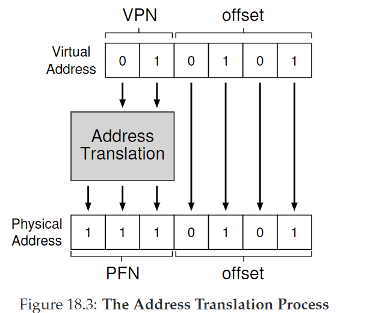
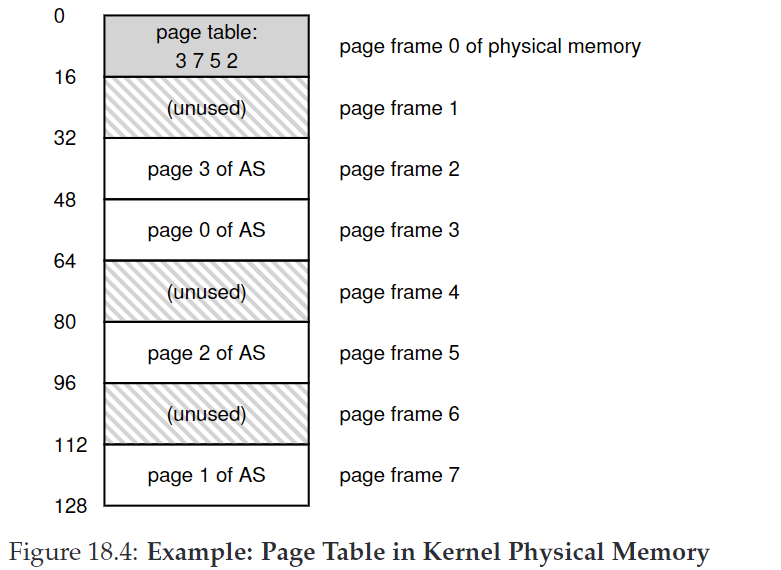
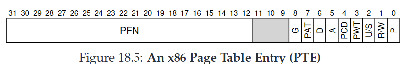
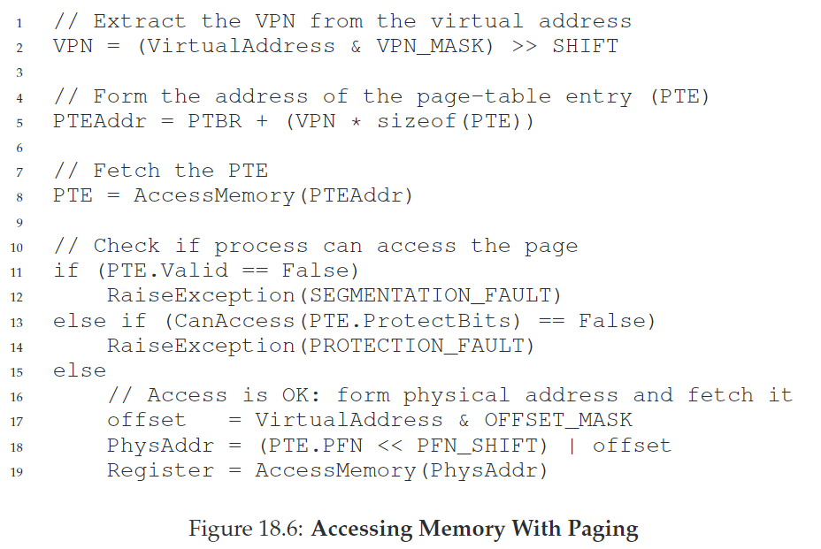

18. Paging: Introduction
segmentation方法切割了内存空间，导致空间碎片化。本章开始将介绍一种固定大小切割内存的方法，叫做分页（paging）。每一个固定大小的单元叫做页（page），我们也因此把物理内存看成一个由固定大小的slots组成的数组，叫做页帧（page frames）。
CRUX：如何用页虚拟化内存？
18.1 A Simple Example And Overview
一块虚拟地址空间被划分成多个页，页通过预处理好的页表（page table）转换成物理空间的地址。转换方式是利用virtual page number（VPN），转换成对应的physical frame number（PFN），也叫physical page number（PPN）。下图是一个从64字节转换到128字节空间的例子：

注意offset并不会被转换。

18.2 Where Are Page Tables Stored?
page table很大，因此不会被储存在MMU中，而是存在OS虚拟内存中（甚至交换到disk中）。之后会进一步探讨。
18.3 What’s Actually In The Page Table?
- valid bit: 标识地址转换是否合法。未使用的地址被标记为invalid，触发trap。
- protection bit：标识页势在物理内存中还是在磁盘中。
- dirty bit：标识页是否被修改
- reference bit(accessed bit)：记录页被访问的次数。用于page replacement
下图是x86中一个page table entry例子：

P：present bit；R/W：read/write bit；U/S：user/supervisor bit；PWT,PCD,PAT,G：hardware caching；A：accessed bit；D：dirty bit；PFN：page frame number
注意x86中没有valid bit。当P=1表示present and valid；当P=0，表示not present，由OS利用额外的结构决定是否valid
18.4 Paging: Also Too Slow
实际存储：virtual adress： 32 = 20(VPN)+12(offset)；PTE: 32 = 20(PFN)+3(empty)+9(flag)。

对于每一个内存引用，paging需要执行额外的内存引用来从page table中取回转换的地址。这需要大量的工作。由此带来了时间和空间问题。